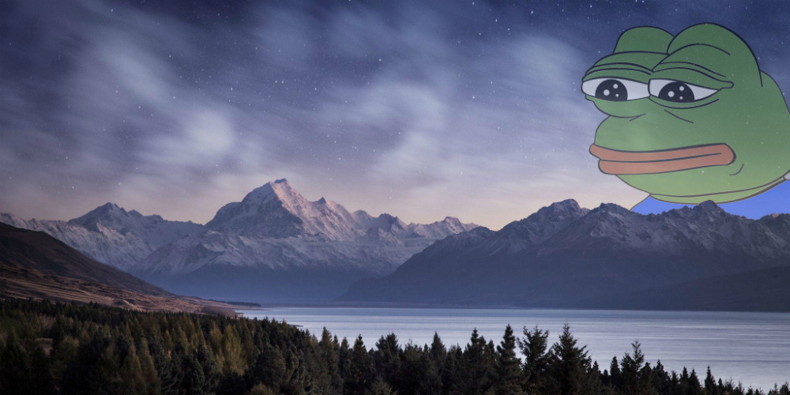

Дон
Сюжет
Entre las 'Siete Maravillas' de la Antigüedad, el faro de Alejandría es el único que ha tenido el honor de saltar a las crónicas de los medios de comunicación en estos últimos tiempos. En el dique portuario de la gran ciudad egipcia, a pocos kilómetros del delta del Nilo, ha tenido lugar a lo largo del tiempo una imponente búsqueda arqueológica submarina para recuperar los restos de uno de los más fascinantes complejos monumentales de la Antigüedad. Es preciso aclarar que 'faro' deriva del nombre griego de la isla de Pharos, próxima a Alejandría (la ciudad fundada en abril del 331 a. C. por el príncipe macedonio de quien toma el nombre).
Península artificial
Alejandro Magno quiso unir Pharos a tierra firme e hizo construir un dique de 1.200 metros de largo que, ampliado paso a paso, forma hoy la península de Ras-et-Tin. Sobre un escollo al este de la isla de Pharos se encontraba, precisamente, una gran torre con un faro. A la muerte del joven soberano macedonio, ocho años después de la fundación de la ciudad, Alejandría se convierte en la capital del Egipto de los Tolomeos. Durante el reinado de la dinastía Tolomeica (304 a. de C. al 30 d. C.) la ciudad contaba con numerosos edificios monumentales entre los que se encontraban el famoso Sema, la tumba de Alejandro Magno y la universidad dedicada a las musas, el Museion, con su legendaria biblioteca, la mayor colección de manuscritos del mundo antiguo que fundada por Tolomeo I, custodiaba 700.000 volúmenes, en su mayoría destruidos por un incendio en el 48 a. C. durante el asedio de Julio César a la ciudad. Pero ninguno de estos edificios, por otra parte espléndidos, resplandecía como el faro, el único incluido entre las 'Siete Maravillas' del mundo. Su construcción se inició durante el primer decenio del dominio tolomeico. La torre se encontraba rodeada por una terraza rectangular de 340 metros de perímetro y protegida con gruesos muros rompeolas. La construcción, totalmente revestida exteriormente de mármol, contaba con una estructura tripartita: un cuerpo rectangular (de 30,60 metros cada lado y 71 metros de alto), ligeramente estrechado hacia lo alto, constituía la parte inferior del faro. La primera torre acababa en una amplia plataforma, decorada en sus cuatro ángulos con estatuas de tritones. De la plataforma, que no era la base, salía el segundo cuerpo del faro, una torre octogonal bastante más estrecha y de 34 metros de altura. Dadas las reducidas dimensiones, esta última torre contaba con una rampa de carga y la escalera seguía por su interior.
Espejos amplificadores
Sobre la plataforma octogonal, una estructura circular contenía en su interior la instalación para la iluminación del faro. Ésta se basaba en una maravillosa serie de espejos cóncavos, reflectores que tenían la misión de amplificar y dirigir la luz. El edificio terminaba con la así llamada linterna (no en el sentido de instrumento para iluminar, sino en el arquitectónico de construcción circular con claraboyas que sirven para coronar un edificio), una pequeña y elegante estructura apoyada sobre columnas y de techo cónico, culminada con una estatua de Zeus (o Poseidón). Con una altura completa de 120-140 metros, el faro de Alejandría era (sin considerar las pirámides egipcias), la construcción más alta de la Antigüedad.
El castillo del mameluco
El faro de Alejandría permaneció intacto durante casi 10 siglos, hasta que una serie de terremotos causó su progresivo deterioro. Sus ruinas quedaron abandonadas a la entrada del Puerto Grande durante cerca de 100 años, cuando, en 1480, el sultán mameluco Kait Bey decidió fortificar la costa y alzó, en ese lugar, un castillo que todavía hoy se encuentra en pie y que lleva el nombre de su constructor.